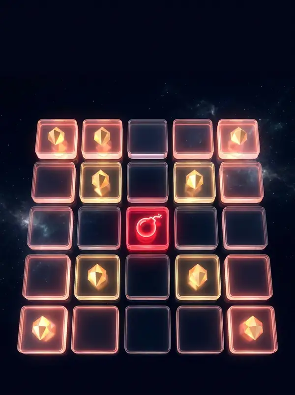
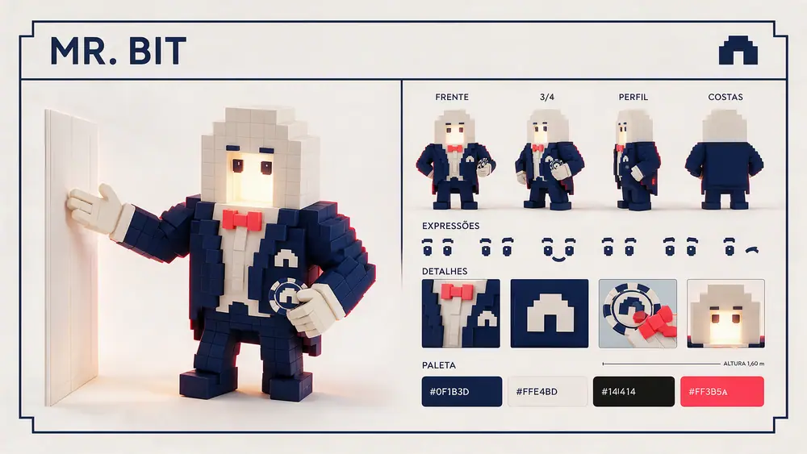
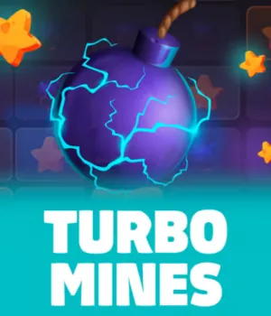

TurboMines
Turbo Mines: como jogar, RTP e recursos
Grade 5x5: você escolhe as minas e a hora de encerrar
De 1 a 24 minas escondidas em 25 casas. Cada casa segura aumenta o multiplicador, e o botão de saque encerra a rodada depois do primeiro acerto.
Em números
O que esperar do Turbo Mines
Dados informados pelo provedor Galaxsys. Confira sempre a tela de regras dentro do jogo.
RTP é uma média teórica de longo prazo, não uma previsão para a sua sessão.

Conheça o personagem
Mr. Bit
Mr. Bit é o mascote do Cassino e, feito de blocos como a grade 5x5, é o guia do Turbo Mines. Ele lembra a regra de ouro do jogo: cada casa segura sobe o multiplicador e você decide a hora de sacar.
Recursos
Como o jogo paga

GalaxsysVitrine
Feito para a tela do celular
Abre direto no navegador, em pé, com toques grandes e carregamento leve no 4G.
Comece em 1 minuto
Do cadastro ao primeiro giro
Crie sua conta
Nome, CPF e e-mail. Leva menos de um minuto.
Deposite via Pix
Escolha o valor, pague no app do banco e o saldo cai em segundos.
Abra o Turbo Mines
Busque pelo nome ou use o botão desta página. Defina seu limite e jogue.


Dúvidas
Perguntas frequentes
Qual a melhor quantidade de minas?
Não existe configuração vencedora. Poucas minas dão acertos mais frequentes com multiplicador menor; muitas minas, o contrário.
O RTP é fixo?
O provedor informa uma faixa que pode chegar a 98,89% conforme a configuração. Confira o valor nas regras dentro do jogo.
Funciona no celular?
Sim. A grade é grande, com toques simples, ideal para jogar com uma mão.
Qual a aposta mínima?
A aposta mínima é definida pelo próprio jogo e aparece no seletor de aposta dentro do Turbo Mines. Confira o valor antes de começar e escolha um que caiba no limite da sua sessão.
Como faço saque?
O botão de saque dentro do Turbo Mines só encerra a rodada e leva o valor para o seu saldo. Para retirar o saldo da conta, use a carteira da plataforma: o saque é feito via Pix. Condições e prazos estão nos Termos e Condições.
Pronto para jogar
Turbo Mines está a um toque
Crie a conta, faça o Pix e abra o jogo direto no celular.